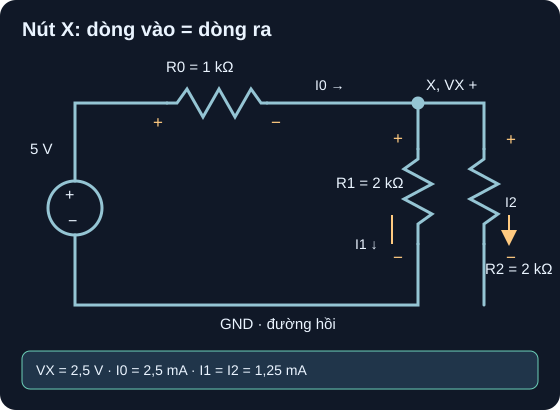

Mô Hình Mạch DC & KCL/KVL
Mỗi mũi tên có dấu; mỗi nghiệm phải qua ba phép kiểm: nút, vòng và công suất.
- Đặt nút ground 0 V, vẽ mũi tên dòng và dấu điện áp cho nguồn cùng mọi điện trở trong mạch nhiều nhánh.
- Viết KCL tại nút X và hai phương trình KVL độc lập với dấu nhất quán.
- Giải điện áp nút, dòng các nhánh và kiểm tổng công suất nguồn cấp bằng điện trở tiêu thụ.
- Nêu giả định nguồn/dây/điện trở lý tưởng và dữ liệu còn cần nếu muốn mô phỏng hoặc đo thật.

Đọc mô tả A09-1
Cực âm nguồn 5 V nối nút GND 0 V; cực dương là S=5 V. R0=1 kΩ từ S đến X; I0 lấy chiều S→X và điện áp rơi dương ở S. R1=2 kΩ, R2=2 kΩ đều từ X xuống GND, lần lượt I1,I2 hướng xuống và điện áp rơi dương ở X. Ba dòng hồi qua dây dưới về âm nguồn. Đáp án mô hình: VX=2,5 V, I0=2,5 mA, I1=I2=1,25 mA.
1. Từ sơ đồ vật lý sang mô hình lumped
Ở D05–D06, ta đã dùng định luật Ohm cho nhánh đơn. Với mạch nhiều nhánh phải quy định nút, dấu và hướng trước khi bấm máy. Mô hình A09 giả định nguồn DC 5 V lý tưởng, dây nối có R=0, mỗi điện trở đúng trị số danh định và không phụ thuộc nhiệt. Chọn VGND=0 V, nên VS=+5 V. Một nút là tập các điểm nối bằng dây lý tưởng; hình học đường dây không làm xuất hiện thêm điện áp trong mô hình này. MIT 6.002 Lecture 2, Basic circuit analysis method giới thiệu cách phân tích mạch lumped.
| Phần tử | Đầu + / đầu − của điện áp rơi | Dòng quy ước | Biểu thức |
|---|---|---|---|
| R0, 1 kΩ | S / X | I0: S→X | I0=(5−VX)/1 kΩ |
| R1, 2 kΩ | X / GND | I1: X→GND | I1=VX/2 kΩ |
| R2, 2 kΩ | X / GND | I2: X→GND | I2=VX/2 kΩ |
| Nguồn | S / GND | Đẩy I0 ra S, nhận dòng hồi ở GND | VS−VGND=+5 V |
OpenStax §10.3, “Kirchhoff's Rules” nêu tổng dòng đi vào nút bằng tổng dòng đi ra và tổng biến thiên điện áp quanh vòng kín bằng 0. Chọn chiều dòng giả định tùy ý; nghiệm âm có nghĩa dòng thật ngược mũi tên, không phải phép giải vô hiệu.
2. Ví dụ giải từng bước và ba phép kiểm
- KCL tại X:
I0=I1+I2, tức(5−VX)/1 kΩ=VX/2 kΩ+VX/2 kΩ. Nhân hai vế với 1 kΩ:5−VX=VX, vậyVX=2,5 V. - Dòng:
I0=(5−2,5)/1 kΩ=2,5 mA;I1=I2=2,5/2 kΩ=1,25 mA. KCL kiểm số:2,5=1,25+1,25 mA. - KVL vòng nguồn–R0–R1: đi từ GND qua nguồn lên S rồi theo I0, I1 về GND:
+5 V−I0·1 kΩ−I1·2 kΩ=5−2,5−2,5=0 V. - KVL vòng nguồn–R0–R2:
+5−I0·1 kΩ−I2·2 kΩ=5−2,5−2,5=0 V. Vòng nhỏ R1/R2 cho−I1·2 kΩ+I2·2 kΩ=0là hệ quả, không phải phương trình độc lập thứ ba. - Công suất: nguồn cấp
5 V·2,5 mA=12,5 mW. R0 nhậnI0²R0=6,25 mW; mỗi nhánh nhậnVX²/2 kΩ=3,125 mW. Tổng6,25+3,125+3,125=12,5 mW. Nếu chọn quy ước thụ động cho mọi phần tử, nguồn cóPnguồn=−12,5 mWvà tổng đại số công suất bằng 0.
Nếu tính nhanh bằng tương đương, R1||R2=1 kΩ, tổng tải nguồn R0+R||=2 kΩ, nên I0=5/2 kΩ=2,5 mA. Đây là phép kiểm độc lập về đại số; KCL/KVL vẫn cần để kiểm từng nhánh. OpenStax §10.3, Fig. 10.24–10.25 phân biệt phương trình nút/vòng độc lập và dư.
3. Hoạt động tái lập bằng giấy hoặc bảng tính
Chép netlist dưới đây, giữ đúng node
S,X,0. Dòng R0 từ S→X, R1/R2 từ X→0. Suy raVS=5 Vvà viết ba biểu thức dòng từ bảng mục 1.Điền cột VX thử
0;1,25;2,5;3,75;5 V; tínhF(VX)=I0−I1−I2bằng mA, ví dụ bảng tính=(5-A2)/1-A2/2-A2/2khi các điện trở nhập theo kΩ. Kết quả kỳ vọngF=5;2,5;0;−2,5;−5 mA. Nghiệm là hàng F=0.Từ VX=2,5 V tính bảng dòng, áp rơi, công suất từng điện trở và ba residual
KCL=I0−I1−I2,KVL1=5−VR0−VR1,KVL2=5−VR0−VR2. Kỳ vọng cả ba bằng 0 trong tính chính xác.Nếu dùng simulator DC operating point, nhập chính netlist, ghi tên/version phần mềm, file/netlist, node và bảng số xuất ra rồi mới so. Bài này chưa có file chạy SPICE hoặc phép đo; kết quả bên trên là tính tay có thể tái lập.
* Mô hình DC lý tưởng A09; node 0 là GND
V1 S 0 DC 5
R0 S X 1k
R1 X 0 2k
R2 X 0 2k
.op
.end| VX (V) | I0 (mA) | I1+I2 (mA) | F (mA) |
|---|---|---|---|
| 0 | 5 | 0 | 5 |
| 1,25 | 3,75 | 1,25 | 2,5 |
| 2,5 | 2,5 | 2,5 | 0 |
| 3,75 | 1,25 | 3,75 | −2,5 |
| 5 | 0 | 5 | −5 |
Nguồn thật có sai số và điện trở trong; điện trở có dung sai/công suất/nhiệt, dây và phép đo không lý tưởng. Không suy “đã đo được 2,5 V” từ phép tính. Mạch thật chỉ làm khi chốt part, nguồn giới hạn dòng, công suất từng điện trở và người duyệt; bài này hoàn thành trên giấy.
Giữ nguồn 5 V và R0=1 kΩ, thay R1=1 kΩ, R2=3 kΩ. Tìm VX, I0, I1, I2; kiểm KCL, KVL của hai vòng và công suất toàn mạch. Nêu giả định.
- Mô hình, 1 điểm: nguồn/dây/R lý tưởng, GND 0 V;
R1||R2=(1×3)/(1+3)=0,75 kΩ,Rtotal=1,75 kΩ. - Phương trình và đơn vị, 1 điểm:
(5−VX)/1 kΩ=VX/1 kΩ+VX/3 kΩhoặc tương đương chia áp. - Nghiệm và KCL, 1 điểm:
I0=20/7≈2,857 mA;VX=15/7≈2,143 V;I1=15/7≈2,143 mA;I2=5/7≈0,714 mA.15/7+5/7=20/7 mA. - KVL, công suất và giới hạn, 1 điểm: mỗi vòng có
5−(20/7)−(15/7)=0 Vhoặc5−(20/7)−3·(5/7)=0 Vkhi mA·kΩ=V. Nguồn cấp100/7≈14,286 mW; R0400/49≈8,163 mW, R1225/49≈4,592 mW, R275/49≈1,531 mW; tổng700/49=100/7 mW. Chưa kiểm part thật.